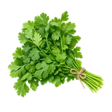

होम / हरा धनिया

हरा धनिया का भाव आज | Coriander Leaves Mandi Price Today
हरा धनिया के आज के उपलब्ध मंडी भाव देखें—रामगंज मंडी, जालौर, पाटन और गन्नौर के मॉडल, न्यूनतम और अधिकतम रेट और प्रति किलो भाव।
नीचे मंडी-वार सूची में हरा धनिया के उपलब्ध भाव दिए हैं। मंडी के नाम पर क्लिक करके उस मंडी की दूसरी फसलों के भाव भी देख सकते हैं।
मंडी भाव की जानकारी
राम राम किसान भाइयों! भारतीय सब्जी मंडियों में हरा धनिया (Green Coriander) सबसे ज्यादा मांग वाली और अत्यधिक संवेदनशील हरी नकदी फसल है। चाहे रसोई में रोजाना बनने वाली दाल-सब्जी की गार्निशिंग हो, तीखी हरी चटनी हो या फिर होटल, ढाबों और कैटरिंग का काम—हरे धनिए के बिना भारतीय थाली अधूरी मानी जाती है। अत्यधिक सड़नशील (Perishable) होने के कारण इसके दैनिक थोक भाव में 24 घंटे के भीतर भारी उछाल और मंदी देखने को मिलती है। मध्य प्रदेश की जबलपुर, छिंदवाड़ा और इंदौर मंडी से लेकर महाराष्ट्र की नागपुर मंडी, गुजरात की अहमदाबाद सब्जी मंडी और राजस्थान की मुहाना मंडी (जयपुर) तक, हरा धनिया का व्यापार पूरे साल बेहद तेज रफ्तार से चलता है। किसान भाई और व्यापारी हमेशा यह जानने के लिए उत्सुक रहते हैं कि आज मंडियों में हरा धनिया का क्या रेट चल रहा है (Hara dhaniya ka rate kya hai), 1 किलो हरी धनिया की कीमत क्या है और आने वाले दिनों में बाजार का क्या रुख रहेगा।
देशी बनाम हाइब्रिड धनिया: मंडी बोली में किसका भाव अधिक?
मंडी में व्यापारी और आढ़ती केवल हरे पत्तों का ढेर देखकर भाव नहीं लगाते, बल्कि किस्म, खुशबू और डंठल के आधार पर लॉट का मॉडल भाव तय करते हैं:
- देशी हरा धनिया (छोटा पत्ता, जबरदस्त खुशबू): देशी धनिए की पत्तियां थोड़ी कटी हुई और छोटी होती हैं, लेकिन इसकी प्राकृतिक सुगंध और स्वाद बहुत तीखा व लाजवाब होता है। स्थानीय सब्जी विक्रेता और गृहणियां देशी धनिए को सबसे पहले चुनते हैं। स्थानीय मंडियों में यह हाइब्रिड की तुलना में ₹15 से ₹25 प्रति किलो तक ऊंचे प्रीमियम भाव पर बिकता है। हालांकि, इसकी पत्तियां बहुत नाजुक होती हैं और यह लंबी दूरी के परिवहन को ज्यादा सहन नहीं कर पाता।
- हाइब्रिड / चौड़ी पत्ती वाला धनिया: यह पौधा अधिक वजनदार, मोटे डंठल और बड़ी पत्तियों वाला होता है। इसमें देशी की तुलना में खुशबू थोड़ी कम होती है, लेकिन इसकी शेल्फ लाइफ (टिकने की क्षमता) 3 से 5 दिन तक अच्छी रहती है। दूर-दराज की बड़ी मंडियों (जैसे दिल्ली, अहमदाबाद या मुंबई) में ट्रक भेजने वाले व्यापारी इसी हाइब्रिड धनिए की जालीदार बोरियों को प्राथमिकता देते हैं।
प्रमुख उत्पादक बेल्ट और बेंचमार्क मंडियों का नेटवर्क
हरा धनिया की आपूर्ति पूरे देश में कुछ खास सप्लायर पॉकेट्स और बड़ी मंडियों के तालमेल पर चलती है:
- छिंदवाड़ा और जबलपुर मंडी (मध्य प्रदेश): मध्य प्रदेश का छिंदवाड़ा क्षेत्र हरा धनिया उत्पादन का एक प्रमुख राष्ट्रीय केंद्र है। छिंदवाड़ा (Hara dhaniya Mandi bhav today Chhindwara) और जबलपुर मंडी में आज हरी धनिया का क्या भाव है, इसका सीधा असर मध्य भारत और उत्तर भारत की आपूर्ति पर पड़ता है। यहां से प्रतिदिन दर्जनों गाड़ियां दूसरे राज्यों के लिए रवाना होती हैं।
- इंदौर मंडी (Indore Mandi hara dhaniya ka bhav): मालवा अंचल की प्रमुख व्यापारिक मंडी होने के नाते इंदौर आसपास के जिलों के लिए बड़ा हब है, जहां से माल गुजरात और राजस्थान की सीमावर्ती मंडियों तक पहुंचता है।
- नागपुर मंडी (महाराष्ट्र): विदर्भ क्षेत्र में हरा धनिया आज का भाव Nagpur तय करता है कि महाराष्ट्र और दक्षिण-मध्य भारत में आपूर्ति की क्या स्थिति है।
- अहमदाबाद सब्जी मंडी (गुजरात): गुजरात की सबसे बड़ी थोक मंडी अहमदाबाद में स्थानीय सौराष्ट्र/उत्तर गुजरात की आवक के साथ-साथ मध्य प्रदेश और राजस्थान से भी बड़े पैमाने पर हरा धनिया पहुंचता है।
हरा धनिया का मौसमी चक्र: भाव कब बढ़ेगा और कब घटेगा?
धनिया का बाजार मौसम के मिजाज पर सबसे तेजी से प्रतिक्रिया देता है:
- सस्ते और बंपर आवक का दौर (दिसंबर से मार्च): सर्दियों के महीनों में मौसम ठंडा और अनुकूल रहने से हर क्षेत्र में स्थानीय फसल भरपूर तैयार होती है। मंडियों में आवक इतनी बढ़ जाती है कि थोक भाव ₹5 से ₹15 प्रति किलो के न्यूनतम दायरे में आ जाते हैं।
- भीषण तेजी और रिकॉर्ड उछाल का समय (मई से सितंबर): गर्मियों में तेज धूप और लू के कारण पौधे सूख जाते हैं, वहीं मानसून की भारी बारिश में पत्तियां खेतों में ही गलने लगती हैं। इस दौरान देश के 80% इलाकों में स्थानीय फसल नष्ट हो जाती है। मांग सामान्य रहती है लेकिन सप्लाई 10 गुना घट जाती है। यही वह दौर होता है जब थोक मंडियों में हरा धनिया ₹80 से ₹150 प्रति किलो और खुदरा में ₹200 से ₹250 प्रति किलो तक बिकता है।
- धनिया का भाव कब बढ़ेगा 2026 में? मानसून के महीनों में जब भी भारी बारिश से खेतों में पानी भरता है या तेज उमस से पत्तियां पीली पड़ने लगती हैं, मंडियों में आवक घटते ही भाव में तात्कालिक बड़ा उछाल देखने को मिलता है।
हरा धनिया बनाम सूखा धनिया (Sukha Dhaniya Ka Bhav): किसान का सेफ्टी वाल्व
धनिया उत्पादक किसानों के पास एक सबसे बड़ा प्राकृतिक सुरक्षा चक्र (Safety Valve) होता है।
- जब सर्दियों के चरम पर मंडियों में भारी मंदी आ जाए और हरा धनिया काटने और मंडी ले जाने की लागत भी न निकल रही हो, तो किसान भाई उसे हरी अवस्था में औने-पौने दाम पर बेचने के बजाय खेत में ही छोड़ देते हैं।
- फसल पकने पर उससे बीज तैयार कर लिया जाता है, जिसे सूखा धनिया (Coriander Seeds) कहते हैं।
- राजस्थान की रामगंजमंडी (कोटा) और मध्य प्रदेश की गुना-कुंभराज मंडियों में सूखे धनिए का राष्ट्रीय स्तर पर बड़ा कारोबार होता है। सूखा धनिया गैर-सड़नशील होता है, जिसे किसान गोदामों में रखकर ऑफ-सीजन में अच्छे भाव पर बेच सकते हैं।
थोक गड्डी/बोरी और 1 किलो के खुदरा रेट में अंतर का गणित
उपभोक्ताओं को अक्सर लगता है कि मंडी में हरा धनिया ₹20 किलो बिका तो शहर के ठेलों पर 1 किलो हरी धनिया की कीमत या धनिया का भाव 1kg ₹60 से ₹80 क्यों है? इसके पीछे 3 ठोस कारण हैं:
- सड़न और पानी छिड़काव का नुकसान (Spoilage & Loss): धनिया सबसे तेजी से गलने वाली फसल है। मंडी से दुकान तक पहुंचते-पहुंचते और रातभर रखने में 15% से 25% पत्तियां पीली पड़कर या गलकर कचरे में चली जाती हैं।
- वजन की घटत: हवा लगने पर हरी पत्तियां तेजी से नमी छोड़ती हैं, जिससे उनका वजन प्राकृतिक रूप से घट जाता है। दुकानदार को तरोताजा रखने के लिए बार-बार पानी छिड़कना पड़ता है, फिर भी वास्तविक पत्तियों का वजन कम हो जाता है।
- गड्डी (बंडल) की बंधाई और मजदूरी: थोक में धनिया बोरियों या टोकनों में तौलकर मिलता है, जबकि फुटकर में व्यापारी को 50-100 ग्राम की छोटी-छोटी गड्डियां बांधनी पड़ती हैं, जिसमें अतिरिक्त समय और लेबर लगती है।
मंडी में सबसे ऊंची बोली पाने के 4 व्यावहारिक टिप्स
- तुड़ाई का सही समय (सुबह या देर शाम): तेज धूप में धनिया की कटाई कभी न करें। धूप में कटी पत्तियां तुरंत मुरझा जाती हैं और बोरी में भरते ही अंदर से गर्म होकर काली पड़ने लगती हैं।
- पीली और गली पत्तियों की छंटाई: खेत से कटाई के तुरंत बाद नीचे की सड़ी, पीली या मिट्टी लगी पत्तियों को निकाल दें। एक समान हरी और साफ गड्डियों को देखकर खरीदार तुरंत ऊंची बोली लगाते हैं।
- हवादार जालीदार बोरियां (Jali Bags): हरे धनिए को कभी भी प्लास्टिक के बंद कट्टों में न दबाएं। हवादार जाली या बांस के टोकनों (Carrots/Baskets) में गीली बोरी की हल्की परत लगाकर माल पैक करें ताकि हवा का संचार बना रहे।
- स्थानीय और बाहरी मंडियों के रेट की तुलना: माल मंडी भेजने से पहले अपनी नजदीकी मंडी के साथ-साथ राज्य की बड़ी थोक मंडियों के दैनिक मॉडल भाव और आवक के रुख पर नजर जरूर रखें।
हरा धनिया का बाजार पूरी तरह ताजा माल, पत्तियों के गहरे हरे रंग और मौसम की परिस्थितियों पर टिका होता है। उचित समय पर कटाई, साफ-सुथरी ग्रेडिंग और बाजार के सटीक उतार-चढ़ाव को समझकर बिक्री करने से किसान भाई अपनी फसल का सर्वोत्तम और अधिकतम मुनाफा हासिल कर सकते हैं।